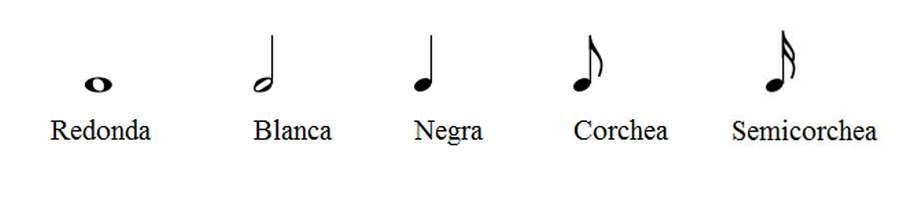
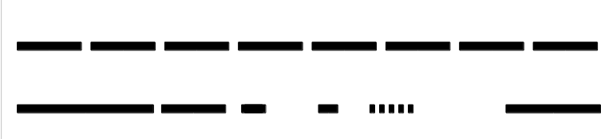

Largo - corto
En el siguiente video escucharás la melodía de Bolero, la parte de la flauta traversa. Escucha los primeros 33 segundos y presta atención a la duración de los sonidos. Identifica cuáles son los sonidos más largos y los más cortos. El video te irá mostrando a medida que suena la flauta traversa, cómo se lee en la partitura. La partitura es un documento manuscrito que utiliza símbolos musicales para indicar la melodía, ritmos y acordes de una canción o pieza instrumental.
La duración de un sonido es el tiempo en que este existe. Los sonidos pueden ser más cortos o más largos en el tiempo.
Así encontramos en nuestra vida cotidiana sonidos cortos como cada tic-tac del reloj o muy largos como el sonido de la heladera hasta que en algún momento se apaga.
Para medir la duración de los sonidos (cuando hacemos música),existen en el lenguaje musical las figuras musicales, que son las que aparecen en el video inicial donde escuchamos la melodía de Bolero ejecutada por la flauta traversa. Cada figura tiene una duración. La redonda es la figura de más larga duración. Su duración es de cuatro unidades de tiempo. La blanca dura dos unidades de tiempo. La negra dura una unidad de tiempo. La corchea dura media unidad de tiempo. La semicorchea dura 1/4 unidad de tiempo. Existen otras figuras musicales con otras duraciones que puedes seguir investigando, ahora estamos viendo las que aparecen en la obra musical Bolero.
Vuelve a mirar el video tomando en cuenta esta información e irás comprendiendo qué relación hay entre lo que suena y lo que está escrito.

Cuando nos refereimos a la duración del sonido, hablamos también del ritmo. Este puede ser regular, o muy cambiante, irregluar.
El ritmo es movimiento, etimológicamente la palabra estaba relacionada a el río y no tanto a su división en el tiempo.
Sin embargo en la música el ritmo divide los sonidos y silencios en diferentes partes.
imagina como sería el ritmo con sus duraciones correspondientes de los siguientes ejemplos gráficos:

Ahora te invitamos a ver y escuchar el siguiente video donde el redoblante es protagonista.
Realiza una decodificación de los sonidos del redoblante de manera gráfica y compártela con alguno de tus compañeros para ver los resultados.